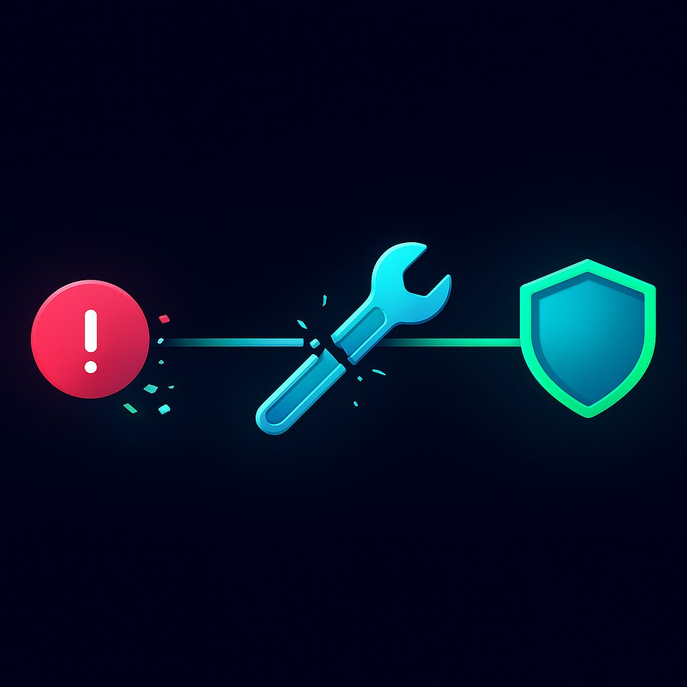

VPN не работает: Комплексное руководство по устранению проблем с NoBorder VPN в 2026 году
В последние годы использование VPN-сервисов в России стало неотъемлемой частью цифровой жизни для многих пользователей. Однако, с ужесточением регуляторных мер и развитием технологий блокировки, всё чаще возникают ситуации, когда привычные VPN-сервисы перестают работать. Эта статья призвана дать исчерпывающие ответы на вопрос "почему VPN не работает" и предложить решения, в частности, для пользователей NoBorder VPN, сталкивающихся с этими проблемами в 2026 году.
1. Почему VPN перестал работать в России 2026
К 2026 году ландшафт интернет-цензуры в России значительно изменился. Основные причины, по которым VPN-сервисы сталкиваются с проблемами, включают:
- Масштабное внедрение технических средств противодействия угрозам (ТСПУ): Эти системы, устанавливаемые на уровне интернет-провайдеров, позволяют государственным органам глубоко анализировать и фильтровать интернет-трафик. Они способны выявлять и блокировать известные VPN-протоколы и серверы.
- Регуляторное давление и блокировка VPN-сервисов: Роскомнадзор активно ведет работу по блокировке VPN-сервисов, которые, по его мнению, не соблюдают российское законодательство. Это включает в себя не только блокировку сайтов VPN-провайдеров, но и их серверов.
- Использование более сложных методов обхода блокировок со стороны провайдеров: В ответ на попытки обхода, провайдеры постоянно совершенствуют свои методы DPI (Deep Packet Inspection) и другие технологии для обнаружения и блокировки VPN-трафика.
- Обновления и изменения в интернет-инфраструктуре: Модернизация сетевого оборудования и внедрение новых протоколов могут косвенно влиять на работу VPN.
- Устаревание обычных VPN-протоколов: Классические протоколы, такие как OpenVPN или L2TP/IPsec, становятся всё менее эффективными против современных систем блокировки. Их паттерны трафика легко распознаются и блокируются.
Эти факторы в совокупности создают сложную среду, в которой работа VPN-сервисов требует постоянной адаптации и использования передовых технологий.
2. DPI блокировки — как провайдеры определяют VPN
DPI (Deep Packet Inspection), или глубокая инспекция пакетов, является ключевым инструментом, используемым интернет-провайдерами для обнаружения и блокировки VPN-трафика. Вот как это работает:
- Анализ заголовков пакетов: DPI-системы проверяют заголовки каждого проходящего пакета данных. Определенные поля в заголовках VPN-протоколов могут иметь уникальные значения или последовательности, которые выдают их природу.
- Анализ паттернов трафика: Даже если заголовки зашифрованы, DPI может анализировать паттерны трафика. Например, VPN-соединения часто характеризуются постоянным потоком зашифрованных данных определенного размера, что отличается от обычного веб-трафика. Системы могут искать аномалии в объеме, частоте и направлении трафика.
- Использование сигнатур: DPI-системы содержат базы данных "сигнатур" известных VPN-протоколов. Это уникальные последовательности байтов или определенные характеристики, которые позволяют идентифицировать конкретный протокол. Когда DPI обнаруживает эти сигнатуры в трафике, оно может его блокировать.
- Обнаружение по портам: Многие VPN-протоколы по умолчанию используют определенные порты (например, OpenVPN часто использует UDP 1194, L2TP использует UDP 1701). Провайдеры могут блокировать трафик на этих портах. Однако, современные VPN-сервисы часто используют обфускацию портов, маскируя VPN-трафик под обычный HTTPS (порт 443) или другие распространенные порты.
- Анализ TLS/SSL хендшейков: Для протоколов, использующих TLS (например, OpenVPN в режиме TCP, WireGuard), DPI может анализировать этапы установления соединения (хендшейки). Определенные параметры в этих хендшейках могут указывать на VPN-трафик, даже если сам канал зашифрован.
- Блокировка по IP-адресам: Провайдеры могут блокировать известные IP-адреса VPN-серверов. Это менее эффективный метод, так как VPN-провайдеры постоянно меняют и добавляют новые IP-адреса.
В ответ на DPI-блокировки, современные VPN-сервисы, такие как NoBorder VPN, используют технологии обфускации (маскировки) трафика. Это может быть маскировка под обычный HTTPS-трафик, использование нестандартных портов, добавление случайных данных в пакеты, чтобы сделать их менее предсказуемыми для анализа DPI. Чем более продвинута обфускация, тем сложнее DPI обнаружить и заблокировать VPN.
3. VPN подключается, но сайты не открываются — DNS, MTU
Ситуация, когда VPN показывает, что он подключен, но интернет не работает или сайты не открываются, является одной из самых распространенных и фрустрирующих. Причины могут быть связаны с настройками DNS или MTU.
Проблемы с DNS:
DNS (Domain Name System) — это система, которая преобразует доменные имена (например, google.com) в IP-адреса (например, 172.217.160.142), которые нужны для маршрутизации трафика. Если DNS работает некорректно, браузер не сможет найти нужный сервер, даже если VPN-соединение установлено.
- Утечка DNS: Ваш VPN может быть подключен, но запросы DNS всё равно отправляются через DNS-сервер вашего интернет-провайдера, а не через DNS-сервер VPN. Если DNS-сервер провайдера блокирует доступ к определенным ресурсам, или если он сам находится под блокировкой, вы не сможете получить доступ к сайтам. NoBorder VPN по умолчанию направляет DNS-запросы через свои защищенные DNS-серверы, но иногда могут возникать утечки.
- Блокировка DNS-серверов VPN: Интернет-провайдеры могут блокировать IP-адреса известных DNS-серверов, используемых VPN-провайдерами.
- Неправильные настройки DNS на устройстве: Иногда на устройстве могут быть вручную прописаны DNS-серверы, которые конфликтуют с работой VPN.
Решения для DNS:
- Проверка на утечку DNS: Используйте онлайн-сервисы, такие как
dnsleaktest.comилиipleak.net, чтобы убедиться, что DNS-запросы проходят через VPN-сервер. - Использование DNS-серверов VPN: Убедитесь, что клиент NoBorder VPN настроен на использование собственных DNS-серверов. В большинстве случаев это происходит автоматически.
- Ручная смена DNS на устройстве: Если автоматические настройки не работают, попробуйте вручную установить публичные DNS-серверы, такие как Cloudflare (1.1.1.1, 1.0.0.1) или Google (8.8.8.8, 8.8.4.4) на вашем устройстве, а затем переподключиться к VPN. Это может помочь, если проблема в DNS-серверах вашего провайдера.
- Очистка кэша DNS: Очистите кэш DNS на вашем компьютере. В Windows это делается командой
ipconfig /flushdnsв командной строке.
Проблемы с MTU:
MTU (Maximum Transmission Unit) — это максимальный размер пакета данных, который может быть передан по сети без фрагментации. Несоответствие MTU между вашим устройством, VPN-сервером и интернет-провайдером может приводить к тому, что пакеты данных будут слишком большими, фрагментироваться или отбрасываться, что приводит к замедлению или полной неработоспособности интернета, несмотря на подключенный VPN.
- Неправильный MTU: Если MTU VPN-туннеля больше, чем максимально допустимый MTU на одном из участков пути (например, у вашего провайдера), пакеты могут теряться.
- Фрагментация пакетов: Слишком большие пакеты начинают фрагментироваться, что увеличивает нагрузку на сеть и может приводить к проблемам с прохождением трафика через файрволы и DPI-системы.
Решения для MTU:
- Автоматическое определение MTU: Современные VPN-клиенты, включая NoBorder VPN, обычно автоматически определяют оптимальный MTU. Однако, в сложных условиях это может не работать.
- Ручная настройка MTU: В некоторых VPN-клиентах, или при использовании ручных настроек, можно попробовать уменьшить значение MTU. Стандартное значение для Ethernet составляет 1500 байт. Для VPN часто рекомендуется использовать значения в диапазоне 1300-1400 байт. Это может быть экспериментальный процесс. Например, можно начать с 1400 и постепенно уменьшать до тех пор, пока интернет не заработает стабильно.
- Использование протоколов, менее чувствительных к MTU: Некоторые протоколы, такие как VLESS с Reality, лучше справляются с проблемами MTU благодаря своей архитектуре.
Если после проверки DNS и MTU проблема сохраняется, стоит обратиться к разделу "VPN не подключается", так как причиной может быть более глубокая блокировка.
4. VPN не подключается — порты, файрвол
Если ваш VPN-клиент NoBorder VPN вообще не может установить соединение с сервером, проблема, скорее всего, кроется в блокировке на уровне портов или файрвола, либо в неправильных настройках клиента или сервера.
Блокировка портов:
Интернет-провайдеры могут блокировать или ограничивать трафик на определенных сетевых портах, которые традиционно используются VPN-сервисами.
- Стандартные VPN-порты: Порты, такие как UDP 1194 (OpenVPN), TCP 1723 (PPTP), UDP 500/4500 (IPsec), могут быть заблокированы.
- Фильтрация трафика на популярных портах: Даже если VPN-сервис использует порт 443 (стандартный для HTTPS), DPI-системы могут анализировать этот трафик, чтобы определить, является ли он на самом деле HTTPS или замаскированным VPN. Если обнаружен VPN, трафик блокируется.
Решения для блокировки портов:
- Смена порта в настройках VPN: NoBorder VPN позволяет переключаться между различными протоколами и, соответственно, портами. Попробуйте использовать протоколы, которые маскируются под обычный веб-трафик (например, VLESS Reality, который использует порт 443).
- Использование обфускации трафика: Протоколы, такие как VLESS Reality, разработаны специально для обхода глубокой инспекции пакетов (DPI) и не зависят от конкретного порта в такой степени, как традиционные VPN. Они маскируют трафик под легитимный HTTPS, делая его неотличимым для DPI.
Проблемы с файрволом (брандмауэром):
Ваш локальный файрвол (брандмауэр) на компьютере или роутере может блокировать исходящие или входящие соединения VPN-клиента.
- Брандмауэр Windows/macOS: Встроенные брандмауэры могут блокировать VPN-соединения, если клиент не был добавлен в список исключений или если настройки безопасности слишком строгие.
- Антивирусное ПО: Некоторые антивирусы имеют встроенные файрволы, которые могут конфликтовать с VPN.
- Файрвол роутера: Ваш домашний роутер также может иметь файрвол, который блокирует определенные типы соединений или порты.
Решения для файрвола:
- Проверка и настройка брандмауэра:
- Windows: Откройте "Брандмауэр Защитника Windows" (или сторонний файрвол) и убедитесь, что VPN-клиент NoBorder VPN имеет разрешение на исходящие и входящие соединения. Временно отключите брандмауэр, чтобы проверить, решит ли это проблему. Если да, добавьте исключение для VPN-клиента.
- macOS: Проверьте настройки "Брандмауэра" в "Системных настройках" -> "Безопасность и конфиденциальность".
- Временное отключение антивируса: Попробуйте временно отключить антивирусное ПО и повторите попытку подключения VPN. Если это помогает, настройте исключения для VPN-клиента в антивирусе.
- Проверка настроек роутера: Зайдите в веб-интерфейс вашего роутера (обычно по адресу 192.168.1.1 или 192.168.0.1). Проверьте настройки файрвола и убедитесь, что нет правил, блокирующих VPN-трафик. Иногда может потребоваться включить функцию "VPN Passthrough" для протоколов PPTP/L2TP/IPsec, но для современных протоколов это обычно не требуется.
- Перезагрузка сетевого оборудования: Иногда простая перезагрузка роутера и модема может помочь сбросить временные блокировки или некорректные настройки.
Если после этих действий VPN все равно не подключается, возможно, проблема связана с самим сервером или конфигурацией, которую вы используете. В этом случае, переходите к разделу "Как переключиться на работающий протокол" или обратитесь в поддержку.
5. VPN медленный — выбор сервера
Медленная скорость VPN-соединения является одной из наиболее частых жалоб пользователей. Причин может быть несколько, но ключевую роль играет правильный выбор сервера.
Причины медленной скорости VPN:
- Нагрузка на сервер: Если выбранный VPN-сервер перегружен большим количеством пользователей, скорость будет снижаться.
- Географическая удаленность сервера: Чем дальше находится VPN-сервер от вашего физического местоположения, тем больше времени требуется для передачи данных, что приводит к увеличению пинга (задержки) и снижению скорости.
- Пропускная способность вашего интернет-провайдера: Ваш собственный интернет-канал может быть ограничен, что влияет на общую скорость, независимо от VPN.
- Качество интернет-соединения: Нестабильное Wi-Fi соединение, помехи или проблемы с кабелем могут вызывать замедления.
- DPI-фильтрация и шейпинг трафика: Некоторые интернет-провайдеры могут намеренно замедлять (шейпить) VPN-трафик, даже если они не блокируют его полностью.
- Выбранный VPN-протокол: Некоторые протоколы (например, OpenVPN в режиме TCP) могут быть медленнее других (например, WireGuard или VLESS Reality) из-за особенностей их работы и издержек шифрования.
- Настройки шифрования: Более сильное шифрование требует больше вычислительных ресурсов и может немного замедлять соединение, но обычно это незначительно.
Как выбрать оптимальный сервер для NoBorder VPN:
NoBorder VPN предлагает ряд серверов, и правильный выбор может значительно улучшить производительность.
- Выбирайте ближайший сервер: В первую очередь, старайтесь выбирать серверы, которые географически расположены ближе к вам. Это уменьшает задержку (пинг) и часто увеличивает скорость. NoBorder VPN обычно предоставляет информацию о расположении серверов.
- Избегайте перегруженных серверов: Если есть возможность, выбирайте серверы